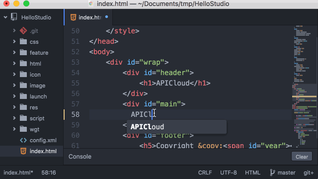
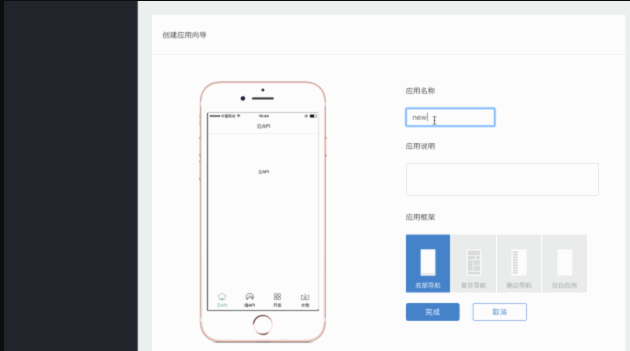

|
APICloud Studio 2是APICloud推出的一款更适合前端工程师的移动应用集成开发工具。基于前端工程师偏爱的开源 Atom编辑器深度定制, 与APICloud平台的各种云端移动开发服务紧密结合，是新一代名副其实的“云端一体”的移动应用快速开发工具 八大优势助你快速而优雅的编码！  整体演示 1.同时支持 macOS/Windows/Linux 三个操作系统 APICloud始终坚持开发者为本，为了满足不同操作系统开发者的需要,新版Studio同时支持macOS/Windows/Linux三个操作系统，无论你使用哪个操作系统都能体验到同样完整、强大的功能，就是这么任性！ 2.媲美谷歌浏览器的实时预览双平台断点调试 本着“一切只为前端工程师，更高效地编码”的宗旨，新版 Studio不仅支持 预览页面实时预览,还可以像在谷歌浏览器中那样,动态修改样式,同时支持Ios/Andriod远程设备断点调试-拥抱“断点”，告别“alert”。 3.内置 git-svn 代码管理“断网”开发不在发愁 为了保证代码管理服务的稳定性，新版Studio内置git-svn代码管理模块, 没有网络也能随时 “提交” 代码, 同时支持SVN和GIT进行代码管理。 4.内置AUI2.1框架十套精美模板 新版Studio内置集成 AUI2.x 前端框架，移动开发更加靠谱。基于 AUI 2.x 的十套全新页面模版，你想知道的都在这里！  整体演示 5.智能语法提示模块文档跳转 更加智能语法提示，再也不用担心记不住方法了：自动推断变量真实模块类型，支持一键跳转模块方法文档。 6.模块管理,云编译,自定义AppLoader 一键直达,深度诠释 APICloud "云端一体" 的设计哲学 APICloud Studio2 与 APICloud 云端控制台直接打通,各种常用操作,如模块管理,云编译,编译自定义 AppLoder 等,可直接在 APICloud Studio2 中使用。 7.WIFI 真机同步,流式日志,实时输出 本地修改代码,可随时通过 WIFI 同步到手机进行查看.无须编译,无须数据线.支持在 APICloud Studio2 控制台查看 WIFI 日志输出,流式读取,实时显示。 8.完整Atom插件可拓展 es6,vue 或者 react 新版 Studio 完整保留 Atom 的插件和主题扩展机制, 不管你是喜欢 es6,vue 或者 react,你都可以优雅地“做自己”。 |